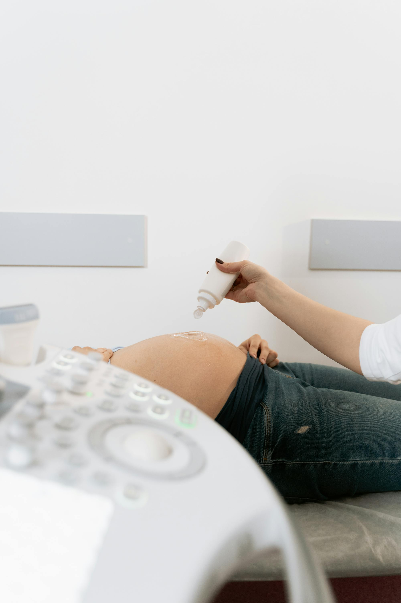
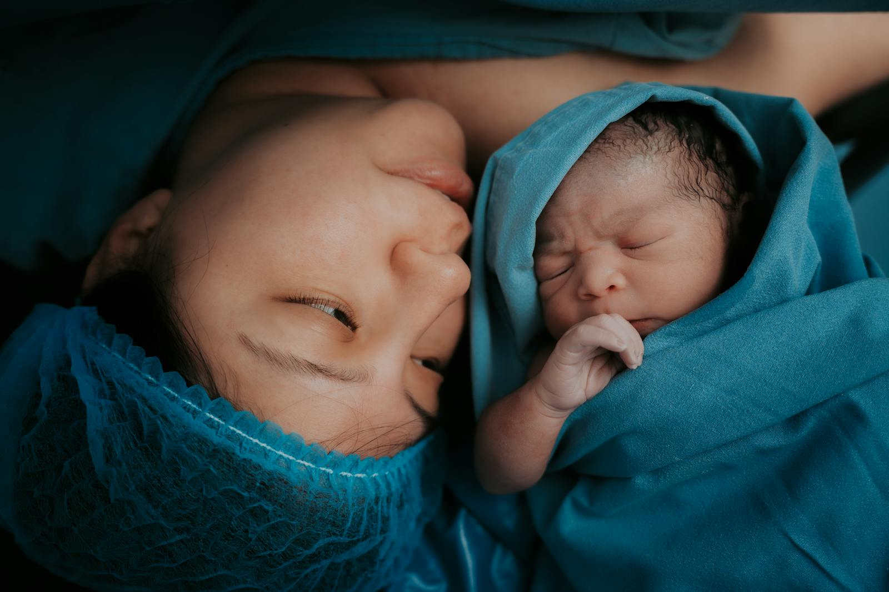
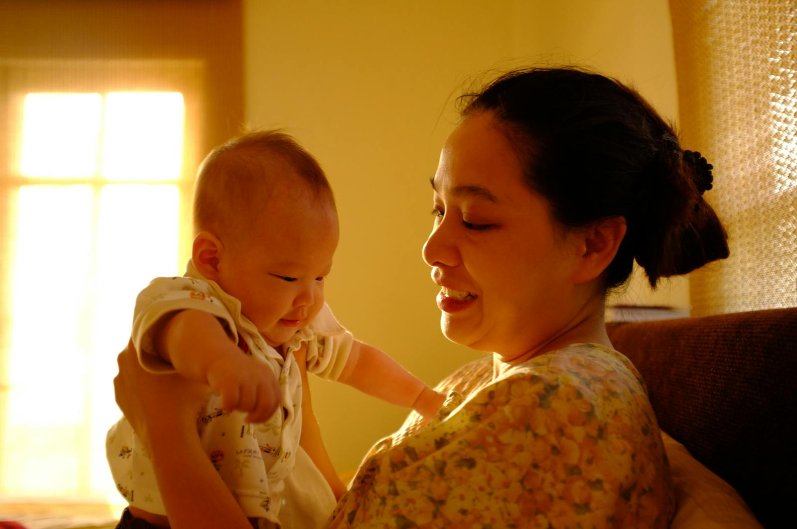

12
Obstetric services
項產科服務
A dedicated obstetric team, an in-house operating theatre, and twelve services designed around the pregnancy journey — all under one Central address. 專業產科團隊、院內手術室、以及圍繞整段孕期設計的十二項服務 — 全於中環同一地址提供。
Obstetrics is the medical specialty that cares for women before, during and after pregnancy. Amber Health offers a full range of obstetric services — from the first antenatal visit, through labour and delivery, to postnatal recovery and lactation — delivered by HK-accredited specialists. 產科是專門照顧女性孕前、孕期及產後的醫學專科。Amber Health 提供全面的產科服務 — 由首次產前檢查、分娩、到產後恢復及哺乳支援 — 全由香港認可專科醫生主理。
Any woman planning to conceive, currently pregnant, or recently delivered. Care begins ideally at pre-conception and continues through the 40-week journey and six weeks postpartum. Women with a prior caesarean, miscarriage, gestational diabetes, advanced maternal age (≥35), or multiple pregnancy are considered higher-risk and benefit from specialist-led pathways. 任何計劃懷孕、正在懷孕或剛分娩的女性均適用。理想情況下，照護應由孕前開始，延續整個四十週孕程及產後六週。曾接受剖腹產、流產、妊娠糖尿病、高齡產婦（≥35 歲）或多胞胎孕婦屬高風險，更適合由專科主導。
Between 6 and 10 weeks of pregnancy, as soon as a home test is positive. The first visit confirms viability by ultrasound, establishes the estimated due date, reviews medical and family history, and plans the schedule of screenings (including nuchal translucency at 11–13⁺⁶ weeks and the anomaly scan at 20–22 weeks). 懷孕 6 至 10 週，家用驗孕棒呈陽性後即可預約。首次檢查會以超聲波確認胚胎活動、估算預產期、回顧個人及家族病史，並安排後續篩查（包括 11–13⁺⁶ 週頸項透明帶及 20–22 週結構篩查）。
Yes — both, with a birth-plan conversation in the third trimester. Our specialists deliver at accredited Hong Kong private hospitals and manage the full care pathway: induction, epidural, assisted delivery, elective or emergency caesarean, and immediate postnatal support. See the full comparison below. 是 — 兩種均可提供，並於第三孕期進行分娩計劃諮詢。我們的專科醫生於認可私家醫院接生，並管理整個流程：引產、硬膜外麻醉、助產、擇期或緊急剖腹、及即時產後支援。詳見下方比較表。
Monitoring and diagnostic services from first heartbeat through the final trimester. 由首次心跳至最後孕期的監測及診斷服務。

Scheduled check-ups tracking mother and baby across all three trimesters — blood work, blood pressure, growth measurement and wellbeing review at every visit.三個孕期的定期檢查，涵蓋血液、血壓、胎兒生長及整體健康評估。
Explore antenatal了解更多 →Dating, nuchal translucency (11–13⁺⁶ wk), mid-trimester anomaly scan (20–22 wk), and growth scans. 2D, 3D and 4D imaging available.孕期定位、頸項透明帶（11–13⁺⁶ 週）、中期結構篩查（20–22 週）及生長超聲。提供 2D、3D、4D 影像。
View scan schedule查看時序 →Cardiotocography (CTG) and non-stress tests measuring fetal heart rate and uterine activity — routine in late pregnancy and essential during labour.心臟監測（CTG）及無壓力測試，量度胎心及宮縮 — 晚期孕程及分娩期間必備。
About CTG了解 CTG →Specialist-led pathway for advanced maternal age, multiple pregnancy, gestational diabetes, pre-eclampsia, placental issues and previous caesarean.針對高齡、多胞胎、妊娠糖尿、子癇前症、胎盤問題及過往剖腹產的專科主導流程。
Learn more了解更多 →Non-invasive prenatal testing (NIPT) from 10 weeks, carrier screening, and diagnostic CVS or amniocentesis when clinically indicated.由 10 週起的非侵入性產前檢測（NIPT）、帶因者篩查；臨床需要時提供絨毛或羊水穿刺。
NIPT vs amnioNIPT 與羊水比較 →Risk screening, cervical length surveillance, progesterone therapy and cerclage where indicated — proactive prevention of preterm labour.風險篩查、子宮頸長度監測、黃體酮治療及必要時的環紮術 — 主動預防早產。
Prevention protocol預防方案 →On-call specialist team and an accredited operating theatre for the birth plan you choose. 專科隨召團隊及認可手術室，配合您選擇的分娩計劃。

Planned onset of labour when medically indicated — post-dates, ruptured membranes, hypertension or diabetes — using membrane sweep, prostaglandins, balloon catheter or oxytocin.醫學指引下的計劃性引產 — 過期妊娠、破水、高血壓或糖尿 — 採用人工剝膜、前列腺素、球囊或催產素。
Methods & timing方法及時間 →Unassisted or assisted (vacuum, forceps) natural birth with full pain-relief options including epidural. Supported by a continuous midwife + specialist team.自然或助產（真空吸引、產鉗），包含硬膜外麻醉等止痛選擇，由助產士及專科醫生連續陪伴。
Birth plan & pain relief分娩計劃 →Elective or emergency caesarean performed by our specialist team with anaesthesiology and paediatric support. Enhanced-recovery protocols for faster healing.由專科團隊執行的擇期或緊急剖腹產，備有麻醉及兒科支援；採用加速康復方案。
What to expect流程概覽 →The six weeks after birth matter. Continued care for mother, baby and feeding. 產後六週同樣重要 — 為母親、嬰兒及哺乳提供持續照護。

Six-week review of physical recovery, pelvic-floor health, contraception planning, and mental-health screening for postpartum mood disorders.六週覆診評估身體恢復、盆底健康、避孕計劃，及產後情緒篩查。
Recovery timeline康復時序 →Certified consultants helping with latch, supply, engorgement, mastitis and returning to work. In-clinic sessions and home visits on request.認可哺乳顧問協助含乳、奶量、乳脹、乳腺炎及重返職場；提供診所面診及家訪。
Book a consult預約諮詢 →Individualised guidance on pill, IUD, implant, injection and barrier methods — with placement and follow-up handled in-house.個人化指導，包括避孕丸、宮內裝置、植入式、注射及屏障方式，診所內完成放置及跟進。
Compare options比較選擇 →Both are safe delivery methods in a properly-equipped setting. The right choice depends on clinical factors and your birth plan — we discuss this together by the third trimester. 兩種均為安全的分娩方式，選擇取決於臨床因素及您的分娩計劃。我們會於第三孕期與您討論。
| Vaginal Delivery自然分娩Natural birth自然生產 | C-Section剖腹分娩Surgical birth手術分娩 | |
|---|---|---|
| Typical duration典型時長 | 6–18 hours of active labour活躍產程 6–18 小時 | 45–90 minute procedure手術 45–90 分鐘 |
| Anaesthesia麻醉 | Optional epidural / gas & air可選硬膜外／笑氣 | Spinal or general, always脊髓或全身麻醉（必備） |
| Hospital stay住院時間 | 2–3 nights2–3 晚 | 3–4 nights3–4 晚 |
| Recovery to light activity恢復輕度活動 | 1–2 weeks1–2 週 | 4–6 weeks4–6 週 |
| Breastfeeding start開始哺乳 | Within the first hour首小時內 | Usually within 1–2 hours通常 1–2 小時內 |
| Best considered when適用情況 | Low-risk, singleton, head-down pregnancy低風險、單胎、頭位 | Breech, placenta praevia, prior C-section, fetal distress臀位、前置胎盤、曾剖腹、胎兒窘迫 |
Three fellowship-trained obstetricians who carry your care from first scan to first night home — the same doctor at every visit. 三位資深婦產專科醫生 — 由首次超聲到首晚回家，每次產檢由同一位醫生跟進。
Three journeys that began at Amber Health — from first scan to first night home. 由首次超聲到首晚回家 — Amber Health 的三段旅程。
Short answers to the questions we hear most. For anything specific to your pregnancy, please book a consultation. 以下為最常被問到的問題。如涉及您的個別情況，請預約諮詢。
Book a 45-minute first consultation with one of our obstetric specialists. We'll walk you through your pregnancy plan and every scan on the timeline. 預約 45 分鐘的首次諮詢，我們的產科專科醫生會逐一為您講解孕期計劃及所有篩查時序。